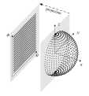

Structured Numerical Grids
The grid with the simplest setup is the structured grid, which looks purely at the two-dimensional projection of the sphere's surface onto a flat surface in angular coordinates $(\theta, \phi)$, which is the longitudinal and latitudinal position on the surface. The entire domain of $\theta \in ( -\pi, \pi )$ and $\phi \in ( -\pi/2, \pi/2 )$ is discretized by $N_{lng}$ and $N_{lat}$ elements in either direction. Thus, the total number of grid elements is $N = N_{lng} \cdot N_{lat}$. The exact coordinates of the center points are calculated through
\[\begin{aligned} \theta_i =& \; \pi \cdot \left( \frac{2i-1}{N_{lng}} - 1 \right), \text{and} \\ \phi_j =& \; \frac{\pi}{2} \cdot \left( \frac{2j-1}{N_{lat}} - 1 \right) \end{aligned}\]
for $1 \leq i \leq N_{lng}$ longitudes $\theta_i$, and $1 \leq j \leq N_{lat}$ latitudes $\phi_j$.
The corresponding area $A$ can be analytically calculated for every grid point as
\[ A = \int_\theta^{\theta+\Delta\theta} \int_\phi^{\phi+\Delta\phi} R^2 \cos \left( \theta \right) d\theta d\phi\]
which leads to a longitude-independent expression after solving the integrals of
\[ A = \Delta\theta \cdot R^2 \cdot \left( \sin(\phi + 0.5 \Delta\phi) - \sin(\phi - 0.5 \Delta\phi) \right).\]
Manual
# load and use ExESS package
include(joinpath(PathToPackage, "src", "ExESS.jl"))
using .ExESS
# define grid input
R = 1_000_000 # sphere radius [m]
N_lng = 180 # number of grid points along longitude [-]
N_lat = 90 # number of grid points along latitude [-]
# create structured grid
grid = Struct_2D_sGrid(R, N_lng, N_lat)Examples
|  |
|---|
| Figure 1: Structured Grid. Spherical structured grid, displayed on half a sphere. Right, in cartesian coordinates, left projected onto two dimensions and displayed in angular coordinates. |
The projection clearly shows the structured nature of the grid, with equally spaced points distributed over the entire domain. This simplicity comes with a problem, which is visible in the polar view, where the grid points move closer together the closer they are to the poles. Each ring contains the full $N_{lng}$ number of grid points, making the pole heavily over-represented in terms of the number of points per surface area.
API
Missing docstring for Struct_2D_sGrid. Check Documenter's build log for details.
Missing docstring for Struct_2D_hsGrid. Check Documenter's build log for details.
Missing docstring for Struct_3D_sGrid. Check Documenter's build log for details.
Missing docstring for Struct_3D_hsGrid. Check Documenter's build log for details.